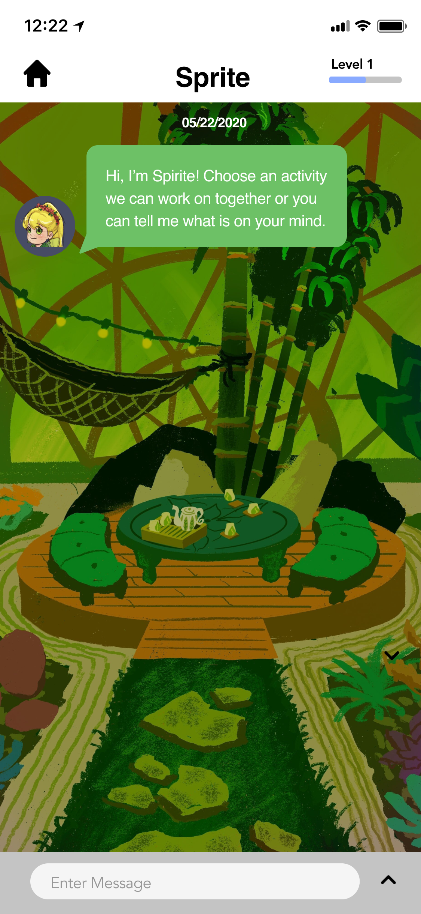
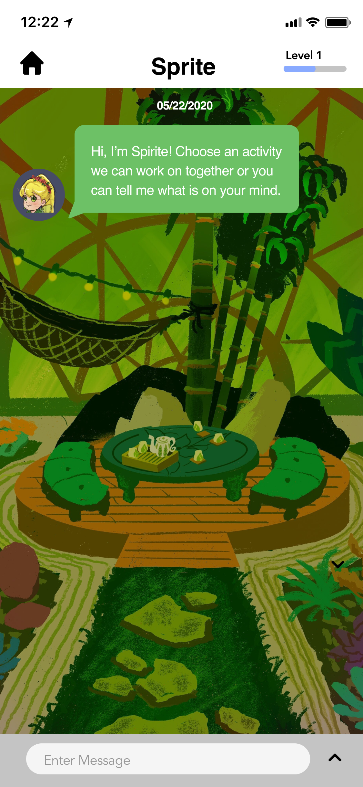
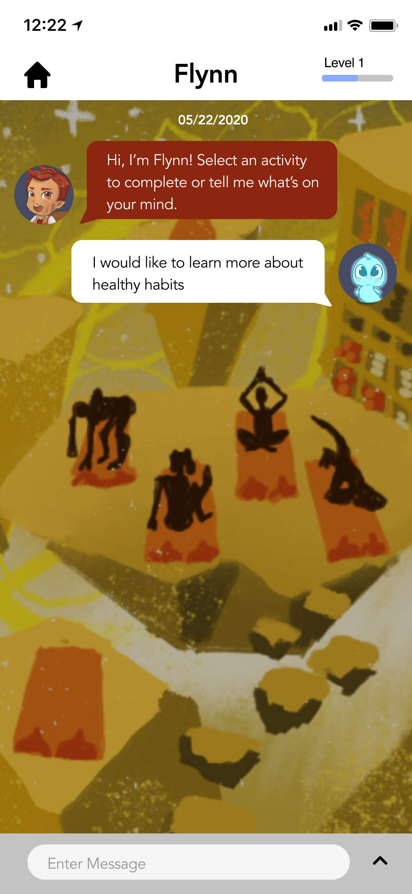

Started off as a Hackathon Project. Nominated for awards. Currently looking for schools who are willing to promote the application.
Tools used: Figma
Final Prototype
Calm On! is an app dedicated to helping children (6-11) understand their emotions, learn how to be physically healthy (in this case stop the spread of COVID-19) , and think mindfully. We created 3 "coaches" named Aurora (mind coach), Sprite (spirit coach), and Flynn (physical fitness coach). We also implemented an AI Chatbot so that the children would be able to communicate with these coaches. We had a large team of animators, researchers, UI/UX designers, animators, and one composer. I was one of the UI/UX designers on the team. My responsibility was to make sure that all the interactions within the game were smooth.
Not many of us had a full understanding about video games. As a result, we decided to do thorough research about children and video games. The research articles we read covered a diverse set of topics (e.g. benefits of playing video games, children and mental health, and more.) The more articles we read, the more we realized that there were not many applications for mental health that are directly targeted towards children. This inspired us to create a game for younger children. We looked at children's games currently released on the app store to get some inspiration. We decided that the main features that we wanted to focus on were the following: Animation and Interaction between the game and the child.
These are the home screens the user will see. The user can choose which character they want. Each of the characters have their descriptions underneath. This will allow the user to get a glimpse at the character before they decide. For these screens, I decided to have the character revolve around like a carousel. This will allow the users to view the characters in detail before making a selection.

Sprite is the mindful coach. There are two features user can choose from: Story-time and Mindfulness. The Story-time feature introduces kids to ACT (Acceptance and commitment technique) through interactive stories and metaphors. For example, if a user would tap on “Accepting Your Negative Feelings” it would bring you through a message style interface where the stories are told, similar to a choose your own adventure style. The Mindfulness feature uses CBT techniques and introduces kids to activities they can do to help manage and alleviate unwanted emotions they are currently going through For example, if they were stressed they could tap on “5-4-3-2-1 Technique”, which will give the child a few strategies for grounding their anxieties and being in the present Another feature is, “The Big Squeeze”, which are different practices that can help kids manage with their anger.

 


Aurora focuses on intelligence. There are two activities the user can choose from: Journal and Coloring. Aurora’s character consists of specific activities that promote CBT (Cognitive behavioral therapy) practices. Users can navigate between categories through the different tabs and have the option to sort the entries by month and year. The Journaling feature allows users to freely write or reflect on their feelings through daily guided prompts and positive journaling. The prompts are randomized everyday. Another feature Aurora offers is coloring. Coloring is known to have the ability to calm the mind and have the same effects as meditation.


Flynn embodies physical health. There are two activities that children can choose from: Healthy Habits and Exercise. Just like the previous characters, Flynn also gives the child an opportunity to share their thoughts and ask questions. For the time being, Healthy Habits has kid-friendly COVID related information that they can refer to. Such as “Do The Five” which are 5 simple steps to help stop the spread of coronavirus, and a comic book teaching kids how to properly wash their hands The Exercise feature promotes good health and suggests exercising videos that give the kid and parents/guardians a fun activity to do together.



This is the style guide that we used while designing the game. I suggested ideas as to what type of buttons needed to be designed. When the game had a screen that had users scroll through multiple options, I suggested that we use either block arrows or swiping. I used the swiping method when the user needed to navigate a story. This was so that the user can feel like they are reading a book. I used the block arrows only when the user needed to scroll through a list. For the keyboard, our team had a debate about whether we should use a plus sign or a carrot arrow. When we conducted a user test, one user pointed out that the plus sign was confusing. She thought that it meant attaching a file. As a result, I suggested switching from the plus sign to a carrot.